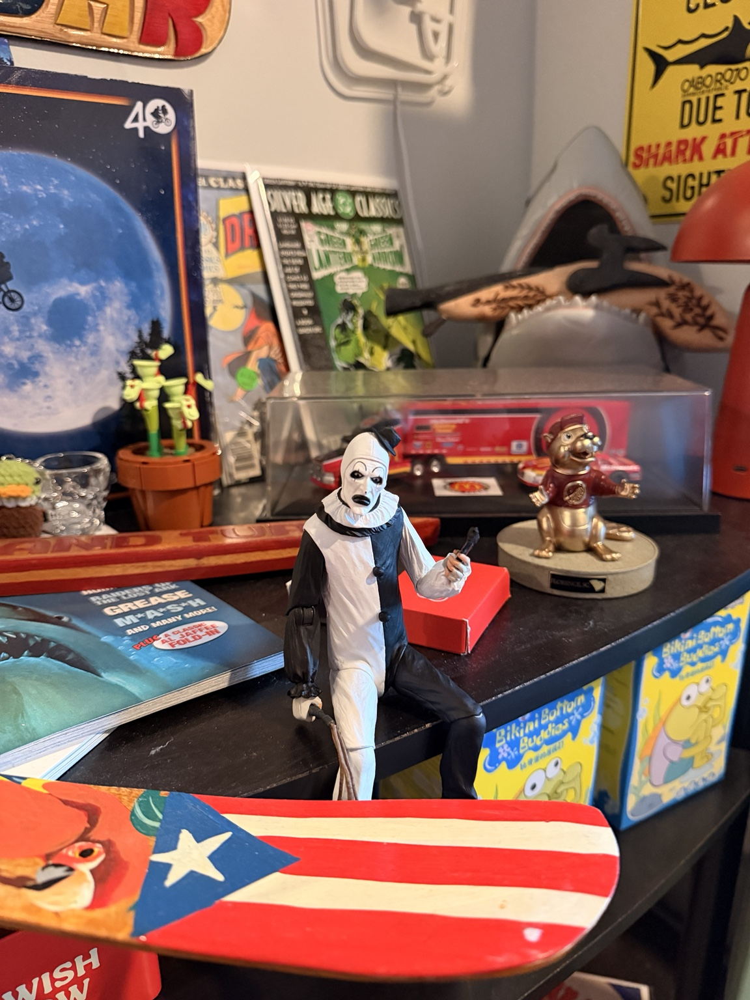
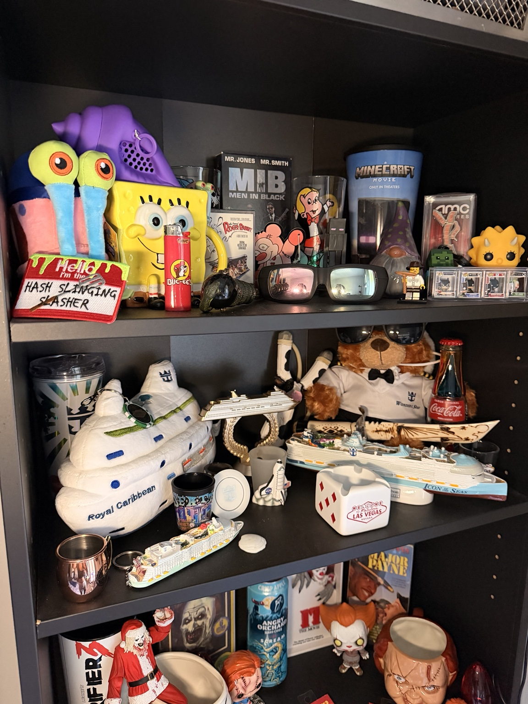
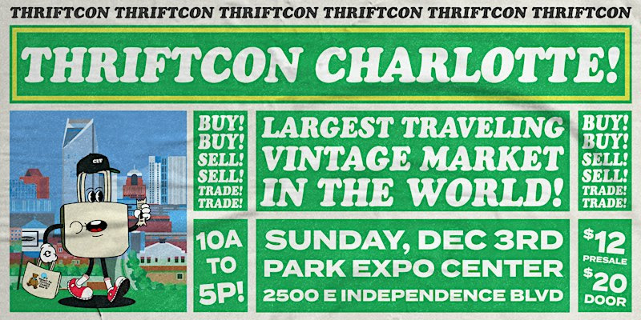
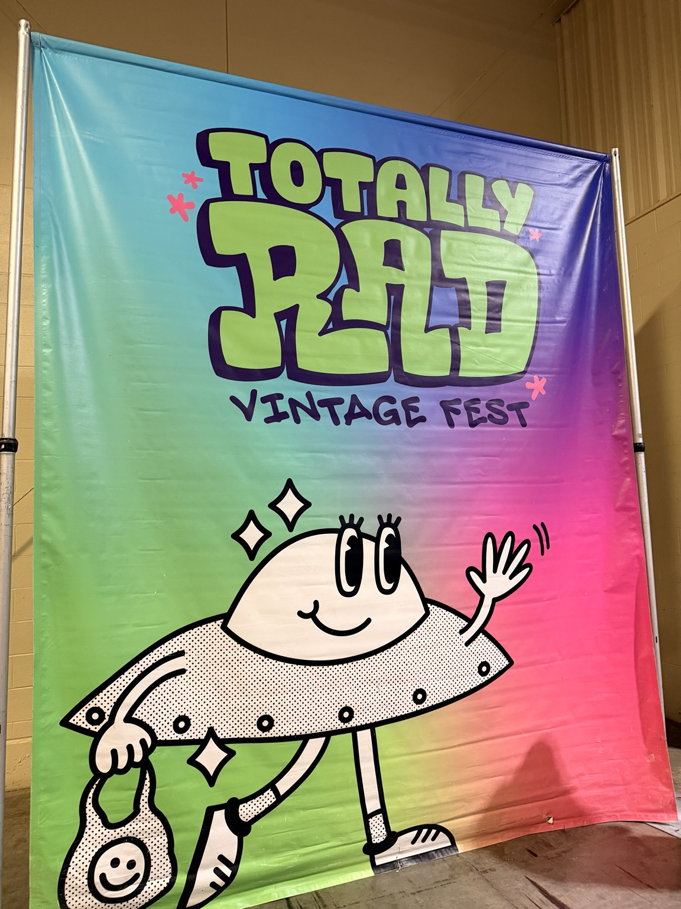
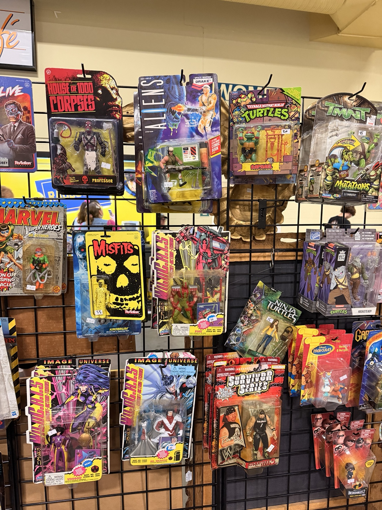
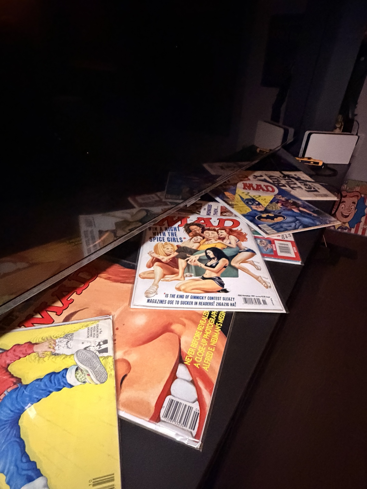

What: The Collection
This is a page dedicated to the wonderful world of retro and novelty collecting! From functional and funky decor, to pop culture figurines and relics, collecting is all about finding that special and unique item that makes your personality that much easier to understand.

Personal photograph taken by me. Not AI-generated.
What Makes Something Collectible?
A common misconception when it comes to collecting is that
the item must be expensive or incredibly rare. The truth is,
interesting finds can be everyday objects from another decade, items that remind
us of our childhood, or simply just an item that pleases our decor taste.
Collecting items that you enjoy can also have less to do with the item,
but more to do with the story of the item, the memories they create
or have allowed to resurface, and the feelings we gain growing attacthed to our collections.
What Can You Collect?
The possibilities are practically endless! Retro electronics, vintage magazines, novelty lamps, movie memorabilia, and childhood toys are just a few examples. Some collectors focus on a specific decade or franchise, while others enjoy mixing different styles to create a collection that's completely their own.
Who: The Collector
A collector can be anyone! There is no qualification to collecting items that mean a lot to you. What truly makes a collector is the special appreciation for things that make people stop and ask, "Where on earth did you find that?" Sometimes, the stranger the find, the better!

Personal photograph taken by me. Not AI-generated.
Who Am I as a Collector?
Personally, my most favored items revolve around entertainment and media. I am especially drawn to horror-inspired memorabilia such as displays and figurines. I also have a love for vintage comics, early 2000s cartoons and modern, or unusual lamps and light fixtures that bring personality to my space. I also travel often, so grabbing a souvenir is always a must!
The Collecting Community
One of the best things about collecting is discovering other people who share the same interests! From vintage enthusiasts to horror memorabilia collectors, there are communities dedicated to almost every imaginable category. Social media groups, conventions, and collector events make it easier to connect, trade, and share exciting discoveries with others.
When: The Best Times to Find Treasures
When is the best time to find a hidden gem? Honestly, there's no perfect schedule for collecting! Sometimes the best discoveries happen when you least expect them. However, themed conventions and festivals are great opportunities for collectors to narrow their search and discover items that cater to their specific interests!

Promotional flyer obtained from a ThriftCon email. Not AI-generated by me.
When Do I Collect?
Oftentimes, a simple search for vintage events and local opportunities can go a long way! I've even found that saving event flyers or favoriting promotional posts from vintage groups can help you discover similar events through social media recommendations, suggested pages, and future advertisements.
Timing Your Treasure Hunts
Different shopping locations offer different opportunities throughout the week and year. Here are a few times worth keeping in mind:
- Weekends: Great for flea markets, garage sales, and estate sales.
- Early mornings: Arriving before the crowds can mean a better selection.
- Seasonal events: Vintage festivals and conventions offer themed shopping experiences.
- Anytime: Thrift stores regularly receive new inventory, so unexpected finds can happen on any visit!
Where: Hunting for Collectables
Retro treasures can be found in many places. I find that Goodwill can occasionally have good finds, but something closer to an antique mall, such as the Sleepy Poet, is a popular hotspot for much more than what Goodwill can offer.

Personal photograph taken by me. Not AI-generated.
Vintage Markets and Festivals
Vintage festivals bring together collectors, independent sellers, and enthusiasts who share an appreciation for retro culture. These events often feature clothing, memorabilia, electronics, and one-of-a-kind decorations.
Where to Find Your Next Treasure
| Location | Common Finds | Price Range |
|---|---|---|
| Thrift Stores | Decor, toys, novelty items | $ |
| Antique Malls | Vintage electronics, memorabilia | $$ - $$$ |
| Vintage Festivals | Y2K clothing, retro collectibles | $$ - $$$ |
| Online Marketplaces | Rare figures, discontinued items | $ - $$$ |
| Garage Sales | Unexpected finds | $ - $$ |
Price ranges are general estimates and vary depending on the seller, rarity, and condition of each item.
How: Starting Your Collection
Building a collection takes curiosity, patience, and a good eye for unusual finds. Whether you're searching for a specific childhood favorite or simply browsing for something interesting, every collector develops their own approach to treasure hunting.
Finding Your Next Collectible
Start by exploring thrift stores, antique malls, vintage festivals, and online marketplaces. Keeping a wishlist of interesting items can help narrow down your search, but sometimes the best discoveries are completely unexpected!

Personal photograph taken by me. Not AI-generated.
Tips for Starting Your Collection
- Choose your interests: Start with items that genuinely excite you, whether that's vintage toys, horror memorabilia, or novelty decorations.
- Set a budget: Decide how much you're comfortable spending before purchasing collectibles.
- Research your finds: Compare prices, check an item's condition, and learn about its history before buying.
- Display your treasures: Use shelves, display cases, or creative arrangements to show off your collection.
Why: The Joy of Collecting
Why collect things that others might consider outdated or unnecessary? For many collectors, the answer goes beyond simply owning objects. Collecting is a way to celebrate nostalgia, express individuality, and preserve pieces of the past.
A Little Piece of Nostalgia
Sometimes, a single object can bring back an entire collection of memories. Whether it's a childhood toy, an old magazine, or a familiar cartoon character, retro collectibles have a way of reminding people of simpler times and forgotten favorites.

Personal photograph taken by me. Not AI-generated.
Expressing Your Personality
Collections can say a lot about the people who own them. From horror memorabilia to colorful novelty decorations, the items someone chooses to display can reflect their interests, creativity, and personal style.
AI Prompts
AI was used as a resource while developing this hobby website. The prompts below reflect some of the assistance requested during the development process.
Prompts Used
- "Give me a mix of colors that represent the feeling and vibe of vintage knickknacks, decor, and collector items."
- "Explain why someone may choose to use spans over classes and IDs, and whether they are necessary for navigation separators."
- "Help me understand and resolve the HTML and CSS validation checker errors on my hobby website."
- "Help me modify my JavaScript so the browser tab title automatically updates to match the currently selected section."
AI assistance was primarily used for understanding HTML, improving CSS styling, and troubleshooting website requirements.